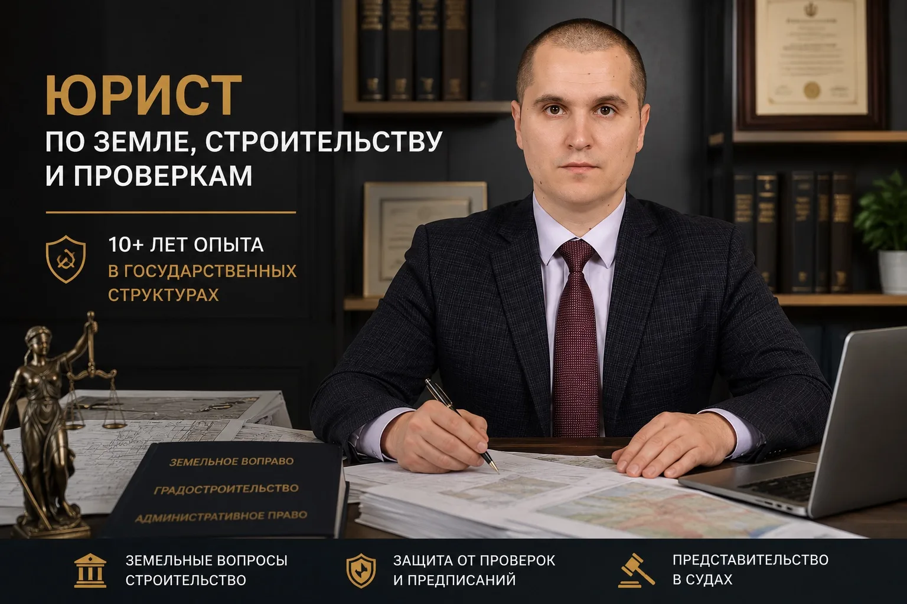

01 / ДОКУМЕНТЫ
Проверка правового основания
Изучаю выписки ЕГРН, правоустанавливающие документы, ГПЗУ, ПЗЗ, межевые материалы, отказы и предписания. Определяю, каких сведений не хватает и какие факты действительно важны.
Юридическое сопровождение земельных и градостроительных вопросов: от оформления прав на участок до разрешения сложных споров, согласования строительства и защиты интересов собственников.
Не обязательно знать юридические термины. Выберите то, что произошло: сосед затапливает двор, отказали в строительстве, не получается оформить землю или пришло предписание.
По вашему запросу не найдено готовой страницы. Опишите ситуацию на консультации.
На результат влияют категория земли, вид разрешённого использования, градостроительные регламенты, сведения ЕГРН, история возникновения прав и позиция уполномоченного органа. Моя задача — увидеть всю правовую картину до подачи документов и выбрать обоснованный порядок действий.
Изучаю выписки ЕГРН, правоустанавливающие документы, ГПЗУ, ПЗЗ, межевые материалы, отказы и предписания. Определяю, каких сведений не хватает и какие факты действительно важны.
Проверяю ограничения использования участка, возможные конфликты с регламентами, границами и правами третьих лиц. Объясняю, в каких случаях решение возможно, а когда нужны альтернативные действия.
Подбираю административный или судебный путь, формирую правовую позицию и перечень документов. Вы понимаете цель каждого этапа, его риски и возможные результаты.
Разбираемся в правовом статусе участка, документации, ограничениях и возможных способах решения — с учётом вашей конкретной ситуации.
Образование и перераспределение участков, аренда, выкуп, оформление прав, взаимодействие с органами власти.
Правовой анализ ГПЗУ и градостроительных ограничений, сопровождение разрешений на строительство и ввода объектов.
Оценка перспектив оформления существующих зданий и самовольных построек, подготовка правовой позиции.
Споры о местоположении границ, исправление реестровых ошибок, сопровождение вопросов с Росреестром.
Нарушения прав при строительстве, отступы, водоотведение, претензионная работа и представительство в спорах.
Изменение вида разрешённого использования, правовые вопросы размещения причалов и использования водных объектов.

Виктор Александрович Дербунов. Специализация — земельное и градостроительное право. Опыт работы в государственных и муниципальных структурах помогает оценивать вопрос не только с позиции нормативных требований, но и с учётом практики их применения.
Работал в Управлении архитектуры Ростова-на-Дону, Россельхознадзоре, Административной инспекции администрации Ростова-на-Дону и Министерстве природных ресурсов и экологии Ростовской области.
Лично выдавал разрешения на строительство, проверял незаконные постройки, составлял протоколы, рассчитывал экологический ущерб и представлял государственные органы в судах. Сегодня этот опыт использую в интересах клиентов.
Профессиональная работа отмечена Благодарственным письмом Законодательного Собрания Ростовской области.
Комплексное сопровождение от проверки документов и подготовки обращений до представительства в суде и регистрации прав.
Практические ситуации из заявленных направлений работы. Формулировки обобщены, подробности и документы не раскрываются из соображений конфиденциальности.
Анализ причин отказа, подготовка документов и правовой позиции для повторного рассмотрения вопроса.
Разбор правового статуса участка под давно построенным жилым домом и сопровождение оформления прав.
Оценка влияния соседней застройки, проверка документации и подготовка аргументированных обращений.
Отзывы из предоставленных скриншотов объявления «Юрист земельного и градостроительного права». Все показанные ниже оценки — 5 звёзд. Оригиналы можно посмотреть на Авито.
«Обратились к Виктору уже в субботу вечером, так как нужна была срочная консультация юриста... изучил наш случай и дал свою консультацию, развернутую, ответил на все наши вопросы... спас наши деньги»
«Виктор Александрович оперативно ответил на сообщение. Бесплатно проконсультировал по моему вопросу, так же составил обращение для дальнейшего решения моего вопроса. Профессионал своего дела. Рекомендую!»
«В полном объеме обсудили план работы и быстро подготовили необходимые документы. Оказанием услуг остался доволен»
«Очень приятное общение, чувствуется грамотный подход к проблеме, без намеков и недомолвок. Виктор Александрович подготовил документы быстро, аккуратно и грамотно»
«В онлайн режиме быстро разобрался с нашей ситуацией и составил необходимый документ, объяснил наши дальнейшие действия. Рекомендую этого специалиста!»
«Быстро изучил мои документы, объяснил все риски и предложил понятный план действий, однозначно буду обращаться еще»
«Виктор, очень оперативно и профессионально подошел к моему вопросу. Рекомендую !!!»
«Была бесплатная консультация по телефону. По моему вопросу быстро подготовили план действий и за несколько дней оформили все документы»
«Помог с гаражной амнистией. Ситуация была запутанная, гараж старый, документов почти нет. Виктор Александрович всё проверил, нашёл нужные бумаги в архивах и оформил землю бесплатно»
Кратко описываете ситуацию и желаемый результат.
Изучаем исходные данные, документы и ограничения.
Определяем возможные варианты, сроки и объём работы.
Готовим документы и ведём вопрос в согласованном объёме.
Конкретный состав работ, сроки и стоимость определяются после ознакомления с задачей и согласовываются отдельно.
Выберите тему, чтобы сформировать сообщение для консультации.
Вы кратко описываете ситуацию. Я уточняю исходные обстоятельства, обозначаю, какие документы могут потребоваться, и обсуждаю возможный порядок дальнейшей правовой работы. Подробное изучение документов и подготовка заключения согласовываются отдельно.
Во многих ситуациях сначала оцениваются административные способы: заявление, исправление документов, обращение в уполномоченный орган, досудебная жалоба. Возможность такого решения зависит от характера спора и действующих процедур.
Да. Работаю по Ростовской области, возможны дистанционные консультации и выезд по согласованию. Документы с персональными данными лучше передавать через отдельно согласованный канал.
Гарантировать решение органа власти или суда заранее некорректно. После проверки документов можно оценить правовые основания, риски и возможные способы защиты интересов.
Первичная консультация — бесплатно. Опишите задачу кратко. Для первоначального обращения достаточно общей информации — конфиденциальные документы лучше направлять после согласования удобного защищённого канала связи.
Ростов-на-Дону, Таганрог, Шахты, Волгодонск, Новочеркасск, Батайск, Азов, Аксай, Сальск, Зерноград и другие города области. Доступны выезд и онлайн-консультации.
Эта демонстрационная версия сайта не имеет сервера и не хранит введённые в форму данные. При нажатии «Подготовить письмо» на вашем устройстве формируется письмо для отправки через установленную почтовую программу. Передача сообщения происходит только после вашего подтверждения в почтовом приложении.
Пожалуйста, не указывайте в форме паспортные данные, точный адрес участка и иные чувствительные сведения. Перед публикацией сайта с реальным приёмом заявок необходимо подготовить политику обработки персональных данных, проверить наличие необходимых согласий и сведения об операторе.